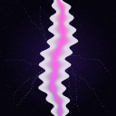

ANOMALY 0101
The Reality Tear
It grows while you sleep. Something on the other side has already found the opening.

BTLCHAPTER ONE// SURVEY LOG 001 · OVERWORLD · DAY 01
CHAPTER ONE — THE NEVER ENDING WORLD
The world is still here.
It just stopped agreeing with itself.
INTERACTIVE VISUAL PREVIEW / NOT GAMEPLAY FOOTAGE
01 / 03 FIRST CONTACT
Nothing announces the end of the world. At first, there is only a mark where the sky should be—and the feeling that it noticed you noticing.
A thin, violet seam holds in the evening sky. It is too straight to be lightning and too still to be a cloud. The guidebook has no entry for it.
02 / 03 THE WORLD RESPONDS
The anomalies are not encounters in a list. They are systems with memory. The world keeps what you change, and uses it to decide what comes next.
It grows while you sleep. Something on the other side has already found the opening.
At the edge of view. Gone when you look directly. In your base when you come back.
At zero percent, the game does not end. The rules do. Something else starts.
03 / 03 BEYOND THE MAP
Seven worlds refuse the rules of the Overworld. One is a maze with no horizon. One is made from the language Minecraft is written in. One is only a sky, with nothing beneath it.
Read the field guideEND OF EXCERPT · SIGNAL CONTINUES
If you can read this,
the world can read you.